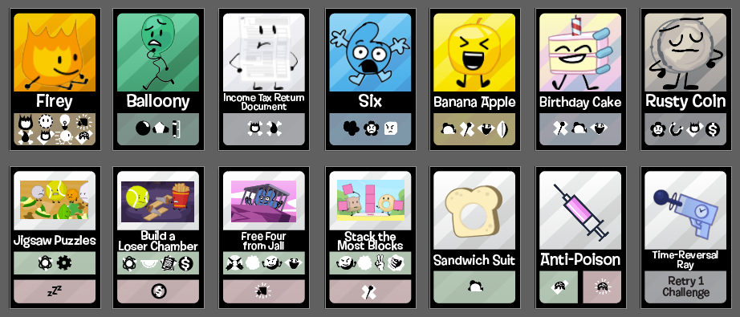

BFDI Cards
About BFDI Cards
BFDI Cards (Name TBD) is a playing card game that I'm designing based on BFDI with two game modes.
In the game you can both create your own fantasy BFDI seasons, or make them competitive by versing opponents with your own team of contestants.
The fantasy season mode is akin to games like the Hunger Games Simulator, essentially acting as a season generator.
The competitive mode is the opposite of a shedding card game like Uno, where you aim to be the last player with cards in their hand.
I've been designing the cards in Illustrator to be used in Tabletop Simulator, and may eventually print them like I did with Last Card, my previous card game.
The game features contestant cards for every official contestant, algebralien, mini contestant, speaker box, and notable recommended character.
It also has challenge cards for every BFDI challenge, and item cards to add and remove stats from contestants of your choice.
